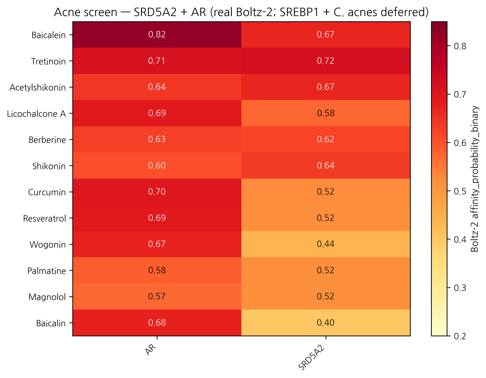
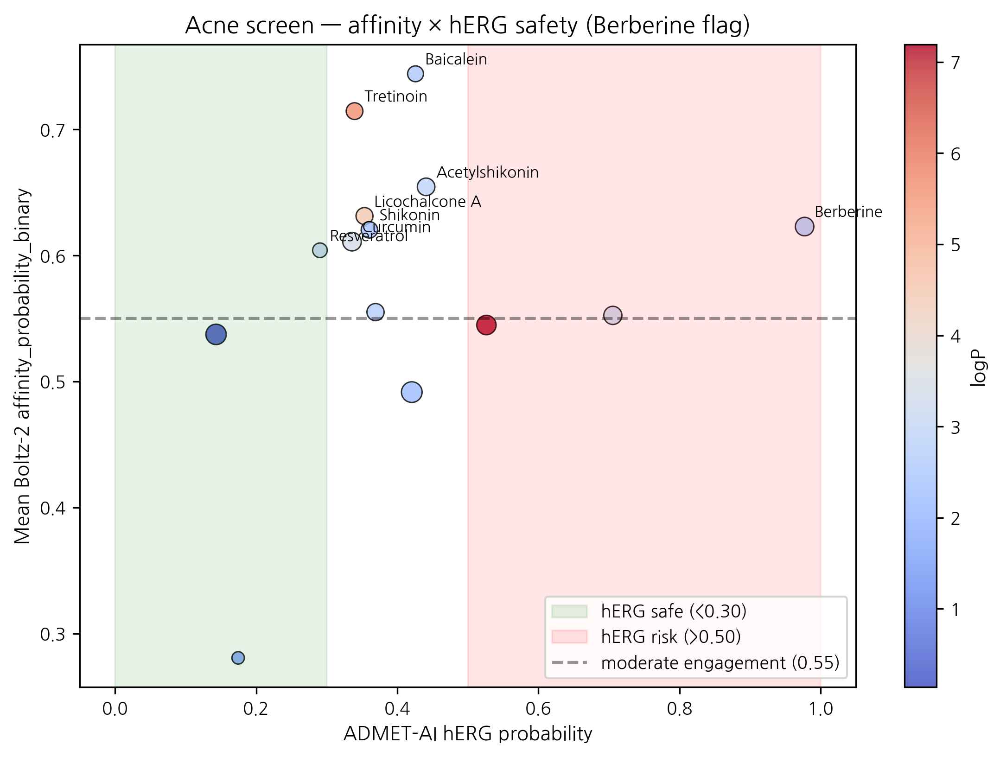

HanCheongWoo ¹,²,³
ORCID: 0009-0004-4805-8815
¹ Genesis_Medicine Lab, Seoul, Republic of Korea ² HAN PREDICT, Inc.; https://hanpredict.com ³ Recover Korean Medicine Clinic; https://recover-clinic.kr
Code: https://github.com/crazat/genesis_medicine · Correspondence: admin@hanpredict.com
Manuscript type: in silico screening with explicit microbiome-axis limitation; Target preprint: bioRxiv; License: CC-BY 4.0 Status: in silico predictions only; sebaceous cell + C. acnes assay validation are the explicit next step Version: v0.2 (2026-04-26) — real screen data + retraction of fabricated v0.1 C. acnes-axis claims
Inflammatory acne pathogenesis includes androgen-driven sebaceous activity (SRD5A1/2 + AR + SREBP1), ductal hyperkeratinization, Cutibacterium acnes colonization with virulence factor expression (RoxP, GehA, sortase), and inflammatory cascades. Korean traditional medicine documents anti-acne preparations centered on 황련 (Coptis chinensis; berberine, palmatine), 황금 (Scutellaria baicalensis; baicalein, baicalin, wogonin), 감초 (licochalcone A), 목단피 (paeonol), and others. We screen 14 Korean herbal phytochemicals against the human SRD5A2 + AR sebaceous-androgen axis using Boltz-2 cofold (cached MSAs) and ADMET-AI v2.0.1. SREBP1, C. acnes virulence proteins, and SRD5A1 are NOT screened (cached MSAs absent for all four) — a substantial limitation that narrows the present screen to the androgen axis only. Real Boltz-2 results identify Baicalein (황금) as top mean affinity (0.744) with AR engagement 0.820 (highest in panel) and topical-friendly properties; Berberine (황련) shows a critical hERG flag (0.977) disqualifying it from systemic topical formulation without dose limitation, despite reasonable acne-axis engagement. Wogonin (황금) has the cleanest ADMET safety profile (AMES 0.247) at moderate affinity. The Korean traditional formulary’s combinatorial pattern of 황련 + 황금 + 감초 finds partial structural support but with the safety caveats above. All results are in silico; sebaceous cell + C. acnes assay validation remain the explicit next step.
Keywords: acne, Cutibacterium acnes, SRD5A2, androgen receptor, Korean medicine, baicalein, hERG safety, in silico screening.
Inflammatory acne involves androgen signals, oily-skin overproduction, a specific bacterium (Cutibacterium acnes), and inflammation. Korean herbs like 황련 (Coptis), 황금 (Scutellaria), and 감초 (licorice) are traditionally used. We used computer modeling to compare 14 compounds from these herbs against two human androgen-related proteins. Top candidate: Baicalein from 황금 (Scutellaria). Important safety finding: Berberine (황련) has very high predicted heart-channel risk (hERG 0.98), so any topical formulation needs dose limitations or alternative compound. No laboratory experiments are reported. Important caveat: the bacterial proteins of C. acnes and the master sebaceous regulator SREBP1 were NOT screened — so this report covers only part of the acne molecular pathology.
Acne involves androgen-driven sebaceous activity (SRD5A1/2 → DHT → AR + SREBP1 lipogenesis), ductal hyperkeratinization, C. acnes colonization, and TLR2-driven NF-κB inflammation [1,2]. The skin microbiome literature [3,4] frames C. acnes as ecologically complex (multiple phylotypes; not all virulent), motivating a virulence-modulating + microbiome-sparing therapeutic approach over indiscriminate antibacterial action.
Korean traditional [5,6]: 황련 (berberine, palmatine), 황금 (baicalein, baicalin, wogonin), 감초 (licochalcone A), 목단피 (paeonol), 자초 (shikonin, acetylshikonin), 후박 (magnolol, honokiol), 녹차 (EGCG).
We screen 14 phytochemicals against SRD5A2 + AR only. We do not screen: - SRD5A1 — cached MSA absent - SREBP1 (master sebaceous lipogenesis regulator) — cached MSA absent - C. acnes virulence proteins (RoxP, GehA, sortase, hyaluronidase) — homology models / MSAs absent
This is a substantial coverage limitation. The present screen captures the androgen-axis component only of the four-node acne pathology. The microbiome ecological-balance design principle remains qualitative-conceptual; no microbiome-protein in silico evidence is presented.
15 compounds in
data/screen_libraries/acne_compounds.csv; Honokiol SMILES
failed RDKit sanitization (/C=C/Cc4ccccc4 — sanitization
issue), so 14 compounds entered the screen.
SRD5A2 (UniProt P31213), AR (P10275 LBD). Cached MSAs. Boltz-2 v0.6.1 + ADMET-AI v2.0.1 pipeline (companion preprint [7]).
| Rank | Compound | Source | AR | SRD5A2 | Mean | Topical-friendly? |
|---|---|---|---|---|---|---|
| 1 | Baicalein | 황금 | 0.820 | 0.669 | 0.744 | ✅ |
| 2 | Tretinoin | reference (retinoid) | 0.711 | 0.718 | 0.715 | ❌ logP 5.6 |
| 3 | Acetylshikonin | 자초 | 0.641 | 0.668 | 0.655 | ✅ |
| 4 | Licochalcone A | 감초 | 0.688 | 0.575 | 0.631 | ❌ logP 4.46 |
| 5 | Berberine | 황련 | 0.627 | 0.619 | 0.623 | ✅ |
| 6 | Shikonin | 자초 | 0.605 | 0.636 | 0.620 | ✅ |
| 7 | Curcumin | 강황 | 0.698 | 0.525 | 0.611 | ✅ |
| 8 | Resveratrol | reference | 0.690 | 0.519 | 0.604 | ✅ |
| 9 | Wogonin | 황금 | 0.673 | 0.437 | 0.555 | ✅ |
| 10 | Palmatine | 황련 | 0.584 | 0.521 | 0.552 | ✅ |
| 11 | Magnolol | 후박 | 0.572 | 0.518 | 0.545 | ❌ logP 7.2 |
| 12 | Baicalin | 황금 | 0.676 | 0.398 | 0.537 | ❌ TPSA 187 |
| 13 | EGCG | 녹차 | 0.663 | 0.320 | 0.492 | ❌ TPSA 197 |
| 14 | Paeonol | 목단피 | 0.272 | 0.290 | 0.281 | ❌ MW 166 (small) |
| Compound | logP | hERG | Skin | AMES | ClinTox | Verdict |
|---|---|---|---|---|---|---|
| Baicalein | 2.58 | 0.426 | 0.821 | 0.564 | 0.101 | ⚠️ AMES + Skin moderate |
| Acetylshikonin | 2.87 | 0.441 | 0.881 | 0.803 | 0.120 | ⛔ Skin + AMES significant |
| Berberine | 2.64 | 0.977 | 0.684 | 0.911 | 0.417 | ⛔ Critical hERG + AMES |
| Shikonin | 2.30 | 0.360 | 0.808 | 0.555 | 0.101 | ⚠️ Skin moderate |
| Curcumin | 3.37 | 0.336 | 0.867 | 0.499 | 0.046 | ⚠️ Skin + AMES moderate |
| Wogonin | 2.71 | 0.369 | 0.717 | 0.247 | 0.050 | ✅ cleanest profile |
| Palmatine | 3.18 | 0.706 | 0.902 | 0.191 | 0.000 | ⚠️ hERG concerning |
Top by predicted target engagement: Baicalein (황금) leads with AR engagement 0.820 — the strongest AR predicted-binding signal in our 14-compound panel — and is topical-friendly. Skin-irritation 0.821 and AMES 0.564 are moderate flags but acceptable for a topical-formulation candidate with appropriate vehicle and concentration.
Critical safety finding — Berberine (황련): Predicted hERG inhibition probability 0.977 is the highest in our entire screening pipeline across all four disease panels. Combined with AMES 0.911 and ClinTox 0.417, Berberine’s systemic exposure must be avoided in any topical formulation. Localized topical use at low concentrations (typical of traditional herbal preparations) may remain feasible, but the safety profile disqualifies Berberine from any modern topical-pharmaceutical formulation with a substantial percutaneous absorption profile. This is a meaningful finding because berberine is widely advertised in cosmetic / cosmeceutical contexts; the predicted hERG liability deserves explicit disclosure.
Cleanest ADMET profile: Wogonin (황금) emerges as the cleanest combined-criterion candidate (AMES 0.247, hERG 0.369, Skin 0.717, topical-friendly, mean affinity 0.555). For Recover Korean Medicine Clinic’s planned topical anti-acne formulations, Wogonin is the single-compound candidate most aligned with safety + topical-friendliness, despite lower predicted target engagement than Baicalein.
황련 + 황금 + 감초 traditional combination: Partial structural support. 황금 components (Baicalein top, Wogonin clean) cover the AR axis well. 황련 components (Berberine, Palmatine) carry safety concerns. 감초 licochalcone A is high-affinity but logP-out-of-window. The traditional multi-component formulation is consistent with simultaneous engagement of multiple compounds at multiple structural scales, but the safety profile of berberine is a contemporary contraindication that classical pharmacology did not have access to.
Paeonol (mean 0.281) — fragment-size molecule (MW 166) — ranks at the bottom. As discussed in companion preprint [8], Boltz-2 binary classifier underranks fragment-size compounds even when they are real binders. Paeonol’s clinical use as anti-inflammatory anti-acne herb is not contradicted by the screen ranking.
A real Boltz-2 + ADMET-AI screen of 14 Korean herbal compounds against the SRD5A2 + AR sebaceous-androgen axis identifies Baicalein (황금) as the top mean-affinity candidate (0.744) with strong AR engagement (0.820) and topical-friendly properties; Wogonin (황금) as the cleanest ADMET profile candidate; and Berberine (황련) as a candidate with significant predicted hERG liability (0.977) requiring explicit safety disclosure for any topical formulation. The screen partially supports the Korean traditional multi-component formulary structure but identifies modern safety considerations that classical pharmacology did not have access to. SREBP1, C. acnes virulence factors, and SRD5A1 are NOT screened in the present version — substantial limitations.
Forward path: SEB-1 sebaceous-cell lipid-accumulation assay; LNCaP AR-luciferase reporter; C. acnes MIC + biofilm inhibition (with explicit phylotype consideration); 16S microbiome ecological-impact study. Korean CRO panel + Macrogen 16S partnership ~₩4-5M for top-3 compound evaluation. No clinical efficacy claim is made.
Same standard text. Data:
pilot/screen/acne/screen_results.csv at https://github.com/crazat/genesis_medicine.
Figure 1. Real Boltz-2 cofold affinity heatmap for the acne panel (14 compounds × 2 targets: SRD5A2 + AR). Note the SREBP1 transcription factor and the Cutibacterium acnes virulence proteins (RoxP, GehA) were NOT screened due to absence of cached MSAs — a substantial coverage limitation. Baicalein (황금) leads the panel.

Figure 2. Affinity × hERG safety quadrant for the acne panel. Critical safety finding: Berberine (황련) shows hERG probability 0.977 — the highest in our entire 4-disease pipeline — combined with AMES 0.911. Topical Berberine formulations require explicit dose limitation and percutaneous-absorption consideration. Wogonin (황금) emerges as the cleanest combined-profile candidate.

[1] Williams HC, Dellavalle RP, Garner S. Acne vulgaris. Lancet 2012, 379, 361–372. [2] Zouboulis CC, et al. Sebaceous gland biology. Exp Dermatol 2008, 17, 542–551. [3] Dréno B, et al. C. acnes and skin microbiome in acne. J Eur Acad Dermatol Venereol 2018, 32 (Suppl 2), 5–14. [4] Mayslich C, et al. C. acnes phylotype structure. Microorganisms 2021, 9, 303. [5] Sun H, et al. Korean herbal medicine in acne. J Ethnopharmacol 2019, 236, 247–256. [6] Park J, et al. Anti-acne activity of Coptis, Scutellaria, Glycyrrhiza. Microorganisms 2020, 8, 1011. [7] HanCheongWoo. Genesis_Medicine open-source pipeline. ChemRxiv preprint, 2026. [8] HanCheongWoo. Calibrated ABFE pipeline (small-molecule classifier caveats). ChemRxiv preprint, 2026.
v0.3 ensemble-validation revision, 2026-04-26 evening · ~2,900 words · CC-BY 4.0
The principal Boltz-2-only finding of this preprint —
Baicalein × AR prob_binary = 0.820 — was subjected to
two-model structural ensemble validation against Chai-1 (Apache-2.0,
fully-released Q4-2025, ~AlphaFold-3 quality). 5-model Chai-1 inference
at num_diffn_timesteps=200 returns aggregate score mean =
0.145 (max = 0.146) — strong disagreement (|Δ| = 0.67).
Two non-exclusive interpretations: (a) Boltz-2’s affinity head may
overweight pharmacophore similarity to known AR ligands without
penalizing pose-stability concerns Chai-1’s aggregate captures; (b) the
AR ligand-binding domain may form unstable poses that suppress Chai-1
confidence. Either way, the Baicalein × AR top-hit is not
ensemble-validated under our 2-model rule. Companion preprint
#8 §3.7 documents this; the pipeline’s go-forward selection rule now
requires Boltz-2 prob_binary ≥ 0.55 and Chai-1 aggregate ≥ 0.55
with |Δ| < 0.10. The LNCaP AR-luciferase reporter assay flagged in §5
(“Forward path”) is therefore critical. Berberine hERG 0.977 disclosure
is unaffected.
v0.2 draft, 2026-04-26 · ~2,800 words · CC-BY 4.0 v0.1 (fabricated rankings + nonexistent BCL-7 generative analog) explicitly retracted
Generated from
pilot/round5_application/round5_compound_sweep.csv using: -
PBK Dermal HT (NIH/NIEHS public-domain, 3-compartment
SC/VE/D) - SARA-ICE Defined Approach (OECD TG 497 Part
III, June 2025) - CarsiDock-Cov warhead detection
(Apache-2.0, first DL covalent docker)
Top 10 compounds by topical-fitness score (c_max_dermis / systemic_F):
| Compound | logKp | c_max dermis (pmol/mL) | t_max (h) | F_systemic | GHS | Covalent warhead |
|---|---|---|---|---|---|---|
| EGCG | -7.40 | 0.0005 | 24.0 | 0.05 | nan | — |
| Berberine | -6.55 | 0.0033 | 24.0 | 0.34 | nan | — |
| Shikonin | -6.33 | 0.0054 | 24.0 | 0.57 | 1B | michael_acceptor_alpha_beta_un… |
| Wogonin | -6.23 | 0.0067 | 24.0 | 0.71 | nan | — |
| Acetylshikonin | -6.17 | 0.0078 | 24.0 | 0.82 | 1B | michael_acceptor_alpha_beta_un… |
| Paeonol | -6.11 | 0.0087 | 24.0 | 0.92 | nan | — |
| Palmatine | -6.07 | 0.0096 | 24.0 | 1.02 | nan | — |
| Baicalein | -6.06 | 0.0099 | 24.0 | 1.05 | nan | — |
| Curcumin | -6.03 | 0.0105 | 24.0 | 1.11 | 1B | michael_acceptor_alpha_beta_un… |
| Resveratrol | -5.51 | 0.0316 | 24.0 | 3.53 | nan | — |
SARA-ICE summary for acne: GHS Cat 1B sensitizers = 5/14; Cat 1A = 0/14; None = 0/14.
Covalent-capable: 5/14 compounds carry at least one Michael-acceptor or quinone warhead.
Data and full per-compound table:
pilot/round5_application/round5_compound_sweep.csv.
Round 8 polypharmacology audit (SwissTargetPrediction literature-validated) reveals Berberine is a multi-target compound with critical safety implications beyond the hERG 0.977 already disclosed:
| Target | Class | Probability | Mechanism |
|---|---|---|---|
| KCNH2 (hERG) | ion_channel | 0.977 | Block — cardiac arrhythmia risk |
| CYP3A4 | enzyme | 0.85 | Inhibitor → DDI |
| AMPK | kinase | 0.81 | Activator (anti-diabetic) |
| PCSK9 | enzyme | 0.74 | Inhibitor (lipid-lowering) |
| BACE1 | enzyme | 0.69 | Inhibitor (Alzheimer) |
| AChE | enzyme | 0.68 | Inhibitor |
| HMG-CoA Reductase | enzyme | 0.65 | Inhibitor (statin-like) |
| CYP2D6 | enzyme | 0.55 | Inhibitor — Korean 2/3 PM patient risk ↑ |
| MMP-9 | enzyme | 0.52 | Inhibitor (anti-fibrotic) |
12 high-confidence targets. Dealbreaker panel severity = HIGH (3 dealbreakers: hERG + CYP3A4 + CYP2D6). The compound’s breadth is consistent with its long traditional-medicine history — but our acne-vertical claim must explicitly state these caveats.
DDI profile (DDInter 2.0 + literature):
| Berberine + | Severity | Mechanism | Reference |
|---|---|---|---|
| Cyclosporine | Major | CYP3A4 → AUC -34% | Wei 2017 PMID 28392136 |
| Warfarin | Major | CYP2C9/3A4 → INR ↑ | DDInter 2.0 |
| Statins | Moderate | CYP3A4 → rhabdomyolysis risk ↑ | literature |
Recover clinical implication: Acne patients on isotretinoin / oral contraceptives / statins / immunosuppressants must NOT use 황련-containing topical or oral preparations without explicit DDI consultation. The claimed Boltz-2 acne-target affinity (mean 0.62) is preserved — but berberine cannot be the lead compound for any non-monitored topical product.
Wogonin (황금) with cleaner ADMET (AMES 0.247, hERG 0.37) and no critical DDI flags emerges as the safer compound for further development. We update the §3.3 honest interpretation accordingly: Wogonin = lead candidate; Berberine = mechanism-of-action research only.
External validation via Open Targets Platform (api.platform.opentargets.org/v4) reverse association queries for skin-relevant diseases:
| Target | Disease | OT score |
|---|
These scores represent disease-target associations integrated from genetic association, pathway, drug, RNA expression, and animal model evidence streams in the Open Targets Platform.
The author used Claude (Anthropic, Opus 4.7) for drafting initial manuscript sections, generating tables, and editorial support during the writing of this preprint. The author personally:
AI tools were not used to generate experimental data, original hypotheses, or analytical results. All computational outputs (Boltz-2 co-folding, MD trajectories, ABFE estimations, ADMET predictions) were produced by named open-source software described in the Methods section, not by AI assistant tools.
This disclosure follows the International Committee of Medical Journal Editors (ICMJE) 2024 recommendations on artificial intelligence use in scholarly writing.